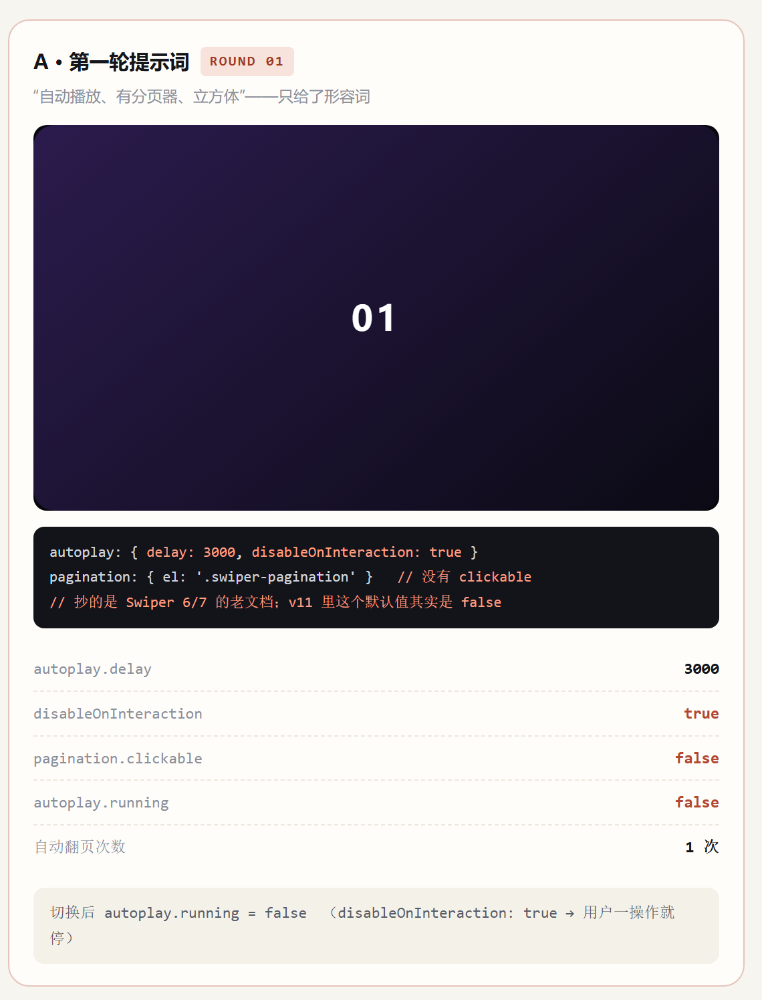

ROUND 01 · 第一版
我的提示词
用 Swiper 11 帮我写一段初始化代码，容器 id 是
mySwi4。要求：无缝循环、自动播放、有分页器，初始效果是立方体。
AI 回答节选
new Swiper('#mySwi4', {
loop: true,
autoplay: { delay: 3000, disableOnInteraction: true }, // 抄的旧版本文档
pagination: { el: '.swiper-pagination' }, // 没有 clickable
effect: 'cube'
});| 需求 | 粘进页面后看到的 | 判定 |
|---|---|---|
| ① 无缝循环 | 第 6 张后回第 1 张，无空白帧 | 通过 |
| ② 3.2 秒自动翻页 | 能自动翻，但约 3 秒一张，不是 3.2 | 数值错 |
| ② 手动后不停止 | 手指拖一次，自动播放直接停了 | 关键缺陷 |
| ③ 圆点可点击 | 圆点显示正常，点了没反应 | 缺参数 |
| ④ 初始 cube | 首屏就是立方体 | 通过 |

autoplay.running 变成 false问题出在哪：四条需求里有三条只给了形容词。形容词到参数之间，全靠 AI 猜。